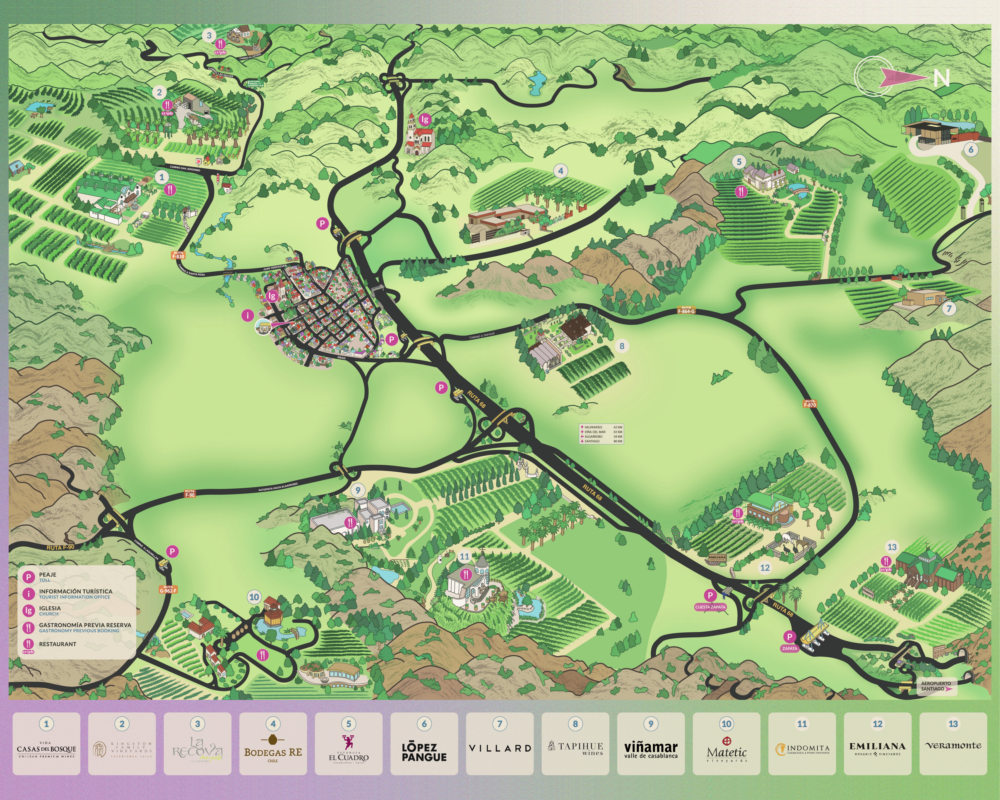

Clima costero
La cercanía del océano Pacífico ayuda a moderar las temperaturas, creando condiciones adecuadas para variedades de clima fresco.

Un territorio donde la influencia del océano, la naturaleza y la tradición vitivinícola dan forma a un paisaje único.
Descubrir el valleUbicado en la Región de Valparaíso, el Valle de Casablanca se ha consolidado como uno de los territorios vitivinícolas más reconocidos de Chile, especialmente por la producción de vinos de clima fresco.
Su identidad está estrechamente relacionada con la cercanía del océano Pacífico, sus paisajes de colinas y la actividad agrícola que forma parte de la historia de la comuna.
Aquí, la vitivinicultura convive con la gastronomía, la naturaleza y las tradiciones del mundo rural.
Una de las características más importantes del Valle de Casablanca es su proximidad al océano Pacífico. Esta influencia marítima contribuye a moderar las temperaturas y generar condiciones favorables para el cultivo de variedades que se desarrollan mejor en climas frescos.
Las mañanas frescas, las neblinas costeras y las diferencias de temperatura durante el día forman parte de las condiciones que distinguen a este territorio.
Estas características pueden favorecer una maduración más pausada de las uvas y la conservación de su acidez natural, cualidades especialmente apreciadas en determinados estilos de vinos blancos y tintos.
La combinación de factores naturales y el trabajo vitivinícola han contribuido a construir la identidad de Casablanca.
La cercanía del océano Pacífico ayuda a moderar las temperaturas, creando condiciones adecuadas para variedades de clima fresco.
La presencia de nieblas y mañanas frescas forma parte del entorno climático que caracteriza a distintos sectores del valle.
Los distintos terrenos y condiciones de cultivo permiten que cada sector presente características particulares para el desarrollo de las vides.
La experiencia de sus productores y el desarrollo de técnicas de cultivo y elaboración han fortalecido la identidad del valle.
Casablanca destaca especialmente por sus variedades blancas, aunque también cuenta con una producción de vinos tintos que aprovecha las condiciones de sus distintos sectores.
Cada variedad posee características propias y puede expresar diferentes aromas, sabores y estructuras dependiendo del clima, el suelo y el proceso de elaboración.
Explora algunas de las variedades que han contribuido al reconocimiento vitivinícola del valle y descubre sus principales características.
VALLE DE CASABLANCA · CHILE
Una de las variedades más representativas de Casablanca. Se caracteriza por sus perfiles frescos y aromáticos, con notas que pueden recordar a cítricos y hierbas.
Fresco y aromático, con posibles notas cítricas y herbáceas.
Las características son orientativas y pueden variar según el productor, el viñedo y el método de elaboración.
Cada variedad tiene una personalidad diferente. Selecciona dos vinos y descubre sus principales características.
Selecciona dos variedades diferentes para compararlas.
Las características descritas son orientativas. El perfil de cada vino puede variar según el productor, el clima, la cosecha y el proceso de elaboración.
La calidad de un vino no depende de un solo factor. En Casablanca, las condiciones climáticas, el entorno geográfico y el trabajo de sus productores se combinan para dar origen a diferentes estilos y expresiones.
La influencia marítima puede favorecer la frescura y acidez de ciertas variedades, mientras que las características particulares de cada viñedo aportan matices a sus vinos.
Clima, temperaturas y exposición de los viñedos.
Suelos y condiciones particulares de cada sector.
Experiencia, técnicas de cultivo y elaboración.
El valle ofrece distintas formas de acercarse a su paisaje, su cultura y sus tradiciones.
Conoce la actividad vitivinícola a través de visitas a viñas y experiencias ofrecidas por sus establecimientos.
Explora los paisajes rurales, las colinas y los caminos del valle, respetando el entorno natural.
Descubre la gastronomía y los productos que forman parte de la identidad de Casablanca.

Explora la Ruta del Vino de Casablanca, descubre sus establecimientos y conoce las experiencias que ofrece este territorio.
Explorar la rutaCasablanca también guarda historias, paisajes y tradiciones junto al océano.